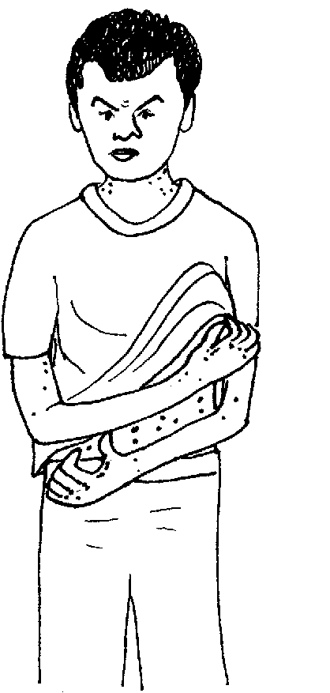
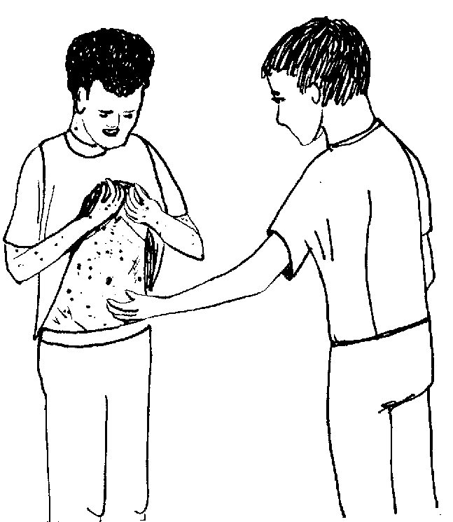
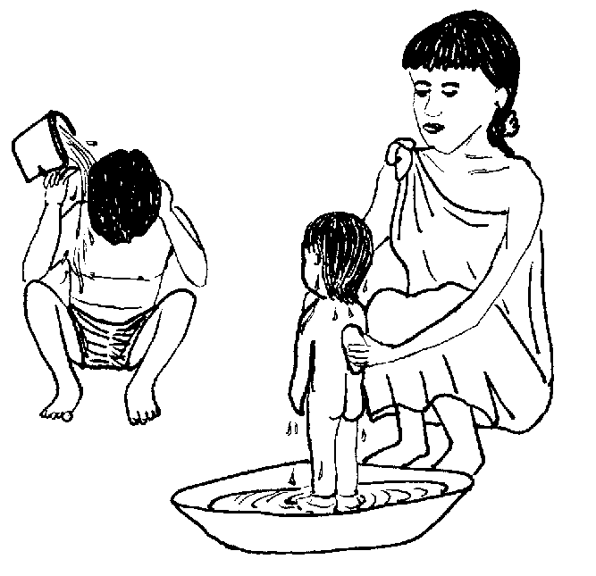
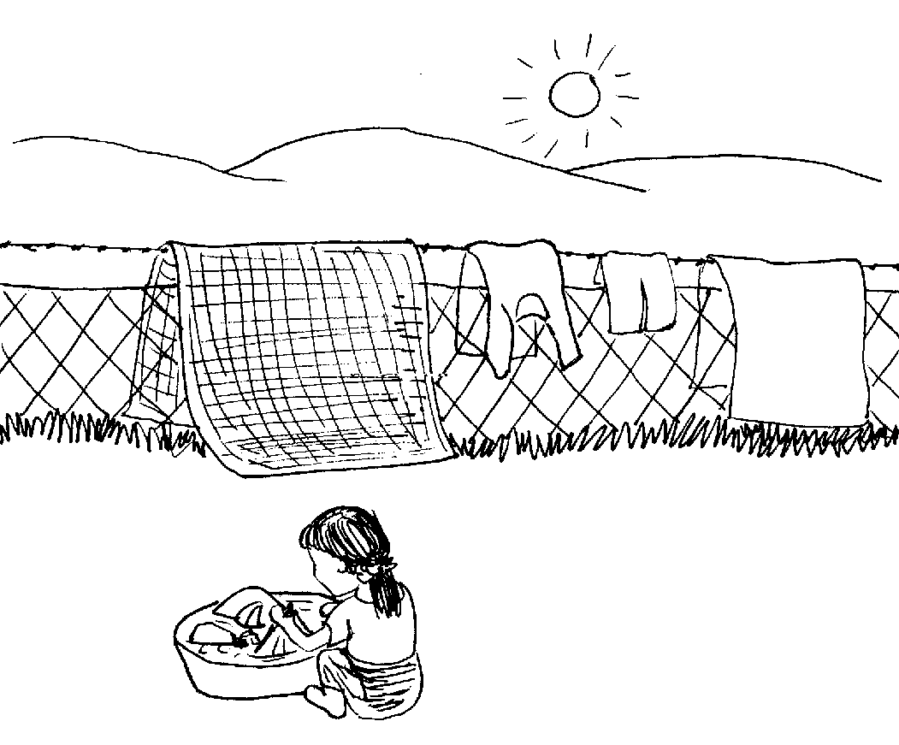
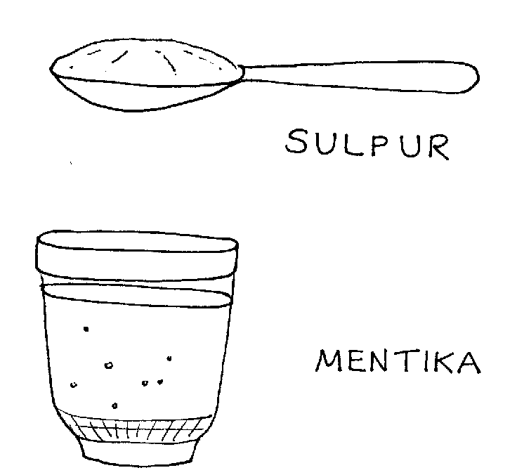
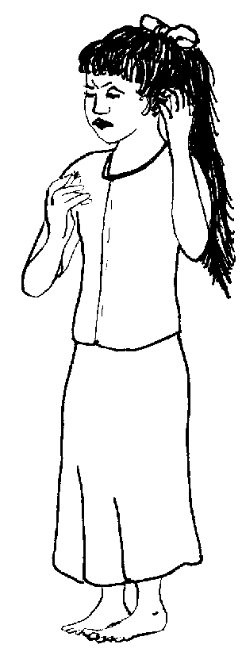
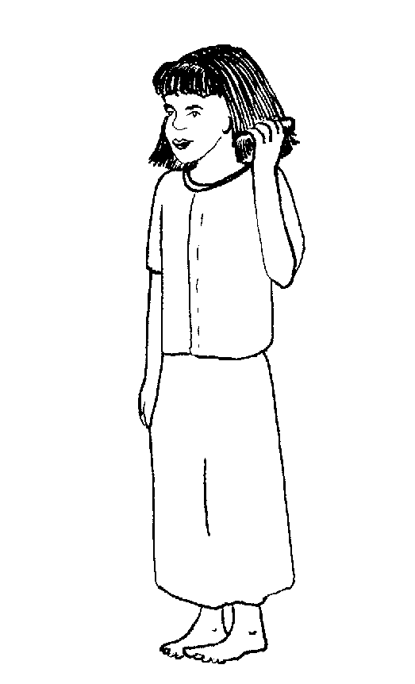
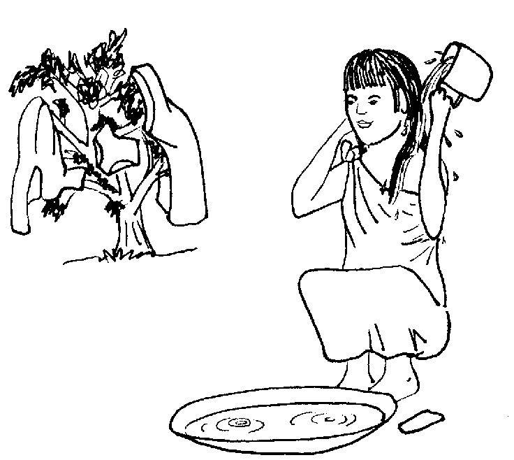

Matigsalug Manobo Healthbooks
Previous Healthbook Up to main Healthbooks page Next Healthbook
Vernacular Lexicon
A
B
BAP
BL
D
E
G
H
I
K
KI
L
LA
LIP
M
N
O
P
PA
R
S
SE
SIN
T
TE
TIN
U
V
W
Y
Z
Healthbooks
Diye te sabekan bariyu, dueg ngaranan ki Binuy ne miggingumaan e te tatelun simana kag derehesan te lawa rin.
Ke timpu te marusilem, amanag masumpit kag panderehes.

Ne kuntee egdehesan e degma ka me anak wey asawa rin.
Seeye ne bariyu, masalig e degma kag panderehesan.
Nakasuman-suman sikandin neg gendiye te ki Inuk te sabekan health worker diyet bariyu ran sug pabawi.
Te pegkeuma rin diyet ki Inuk, impapitew rin e kag panderehes wey impangguhud din ki Inuk te migpangalinan e degma ka me pamilya rin.

Ne migkahiyan sikandin ni Inuk te, “Migpangaliskis kew langun. Seinin kaliskis, egpuun te dereisek amanan uled neg lulungag diyet laplap. Ka karakel te uled, iling te pupul te bulpin.
“Seinin kahew, mahaan deg galin diyet duma keg peg-agbayey kew wey keg peggulirey wey keg peg-ugpuwey te ulesen wey tualya.”
Ne mig-inse si Binuy te, “Egkeulian naan ded seini?”
Ne migtabak si Inuk te, “Uya, egkeulian ded.
“Piru keilangan degma neg pamawian langun ka riyet baley nu minsan ware dan pad pangaliskisa su kema ke duen e degma uled te kaliskis diyet kandan. Kenen mahal seini piru bayew malehen neg gimuwen.”
Ne migkahi si Inuk te, “Emun keg pamawi ka, keilangan ne malinis ka tagse sabekan etew diyet kaniyu.
“Keilangan ne tagse etew egpamanihus wey eg-ayad-ayad egsesebbun tagse aldew wey egpami-pi te me kumbale dan.”
Ne migpabulus din ka migkahi te, “Apil teg dihusen ka me bate su ka egpamanihus keneg pakarereet, ke kene, egpakabehey te keupianan te lawa su kene ma egkeuyag ka kahew.”

Ne mig-inse si Binuy te, “Mania te keilangan neg pamanihus ki tagse aldew? Su sikanami dengan, kene key ma egmamanihus tagse aldew.”
Ne migtabak si Inuk te, “Mahirap neg ugpe ka uled te malinis ne etew. Ne keilangan neg pabulus kew ka egpamanihus tagse aldew minsan ke neulian kew e.”
Ne migpabulus si Inuk ka migkahi te, “Emun keg pamawi kew, keilangan neg pami-pian niyu pad ka me kumbale niyu, me ulesen wey me ikam, wey irampil niyu diyet eg-aldawan.”

Ne mig-inse si Binuy te, “Eg-ugpaan bes te kahew te kaliskis ka me ulesen, me ikam wey ka me kumbale wey tualya?”
Ne migtabak si Inuk te, “Uya, malehet sika su kene kew egkeulian kag kaliskisen ke keneg patey ka uled te kaliskis ne mig-ugpe due.”
Kahi ni Inuk, “Egpekeyimatey te me uled te kaliskis kag pami-pi wey ka igdampil teg aldawan.”
Ne mig-inse si Binuy ki Inuk te, “Seini re langun kag gimuwen ney?”
Ne migkahi si Inuk te, “Duen pad sabeka.
“Kuwa ka te makalawag ne sulpur ne sabekan silut wey pegsewuha nu te liwaret basu ne mentika. Kene kag keinu-inu te mangareg ka sulpur.

“Ne emun keg pekeimpus kew e ka egpamanihus, due-rue neg lakulasan niyu te sulpur ka me lawa niyu, piru ware apil te me ula-ula niyu.
“Ne wey kew e pamanihus keg kapawaan e ka inlakulas niyu ne sulpur.
“Ne keilangan ne libliberi niyu teg lakulas te sulpur te seup man-e ne simana.”
Ne migkahi pad man-e si Inuk te, “Sika se sulpur ka egpekeyimatey te me uled te kaliskis.”
Ne migkahi si Binuy diyet ki Inuk te, “Duen pad man-e ig-inse ku keykew. Dueg derehes diyet ulu te atebey ku ne sengekakuwa ne dueg kasiksik din ne hendue te dereisek ne uled diyet bulbul rin.”

Ne mig-inse sikandin te, “Kaliskis naan ded man-e sika?”
Ne migtabak si Inuk te, “Henduen te kutu sika seg kahiyen nu. Su ka kutu diyeg ugpe te bulbul ne sengekakuwan malised neg pitawen. Tengtengi niyu ka lisee ne diyeg kepkep te igtubu te bulbul.”
Ne migkahi e man-e si Inuk te, “Egpekeiling ded degma ka lisee te kaliskis su mahaan de eggalin diyet duma. Piru ke kene kig keupian neg kutuwen, ilingen te red teg tanggu ka ulu ta te timpu teg kaliskisen ki.”
Ne migkahi man-e si Inuk te, “Kahii nu ka atebey nu te keilangan neg pamanihus din tagse aldew su amanan ispurtanti ka peglinis te kanta ne keuhalingen.
“Keilangan neg pami-pian ka me kumbale, me ulesen, wey tualya su eyew egpatey ka me lisee.”
Ne migpabulus din e man-e ka migkahi te, “Kahii nu man-e sikandin te keilangan neg ay-ayaran din egsugkara ka bulbul rin minsan kararuwa te sabekan aldew, wey patamperi nu ka bulbul rin.”

Kahi ni Inuk, “Ka peggimatey te lisee, keilangan neg subiren din ka bulbul rin te meinit ne suka seled te midya te uras, wey eg-ay-ayaran din teg sugkad.
“Su emun ke keneg kaawe ka lisee, egkataman, egkutuwen ded man-e sikandin.”
Ne migkahi si Binuy te, “Kag gimuwen ta su eyew kene kig kutuwen wey egkaliskisen, keilangan ne egpamanihus ki tagse aldew wey egpami-pi te langun ne me kasangkapan.”

Ne migtabak si Inuk te, “Uya, amanan malehet sika.”
Amana migpasalamat si Binuy ki Inuk te me tambag din wey migpalintutuu rin ka langun ne impanulu ni Inuk kandin.
Ne minsan diyet me alukuy rin ne migkaliskis, impangguhuran din meyitenged te tambag ni Inuk kandin.
Te ware naluhey, warad egpangaliskisen wey egkutuwen diyet bariyu ran.
Egmenuwen-a te eggalin te kaliskis wey kutu puun te sabeka peendiye te duma?
Nekey-a kag gimuwen ta su eyew kene kig kaliskisen wey egkutuwen?
Nekey-a ka duma neg gimuwen ta eyew te pegbawi te kaliskis?
Egmenuwen ta teg bawi ka duma ta neg kutuwen?
Pinaahi te egpekegdagket wey egpekeggulid ne egpekegasungul ka ulu, wey te egpasamsambayey te tualya. (Lukib 45, 53)
Pinaahi te pegpamanihus tagse aldew wey te peg-ayad-ayad egpanebbun, wey te pegpami-pi te me kumbale minsan keg keulian kid. (Lukib 47, 55)
(a) Ka pegpami-pi te langun ne me kumbale, ulesen, ikam wey ka me tualya wey igdampil diyet aldew. (Lukib 49)
(b) Pekeimpus kag pamanihus, iglakulas nu ka impegsewug ne makalawag ne sulpur te mentika intiru te lawa piru ware de apil te ula-ula, wey keilangan neg pasigpawaan ne henduen pad eg-awaa. (Lukib 51)
(a) Tagse aldew neg pepamanihusen wey egpepanebbunen. (Lukib 55)
(b) Egpami-pian ka me kumbale, ulesen, tualya wey igdampil te meinit. (Lukib 55)
(c) Egpatamped te bulbul wey egsugkaren kararuwa te sabekan aldew. (Lukib 55)
(d) Egsubiren ka bulbul te meinit ne suka seled te midya te uras wey eg-ay-ayaran teg sugkad. (Lukib 55)
This page last updated: 28-Dec-2019
Copyright © 2009-2010